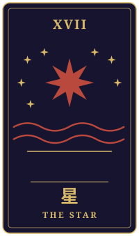

脚立
物語の手前に、ひとつの相談がありました。三枚のタロットをめぐるやりとりを、聞こえたままに書き留めています。
持ち込まれた相談
町で小さな写真館をやっています。主人が亡くなってからは一人です。四十年近く、近くの小学校の運動会を撮ってきました。主人はゴールテープを切る瞬間の一枚にこだわる人でした。今年その学校で、徒競走の順位もテープもなくなりました。来年からは写真もネットで売る大きな業者に頼むそうです。娘は店を閉めてこっちへ来たらと言います。寂しいはずなのに、どこかでほっとしている自分がいます。私は子どもの頃いつもビリで、運動会の朝はお腹が痛くなる子でした。主人が大事にしてきたものを、私が先に手放していいのか分かりません。この店と私は、これからどうしていけばいいのでしょうか。
タロットの読み解き

過去
世界・正位置
世界の正位置は、長い道のりを歩き終えて、ひとつの完成にたどり着いた時のカードです。四十年近く、運動会のゴールを撮り続けてこられたことは、それだけで大きな仕事でしたね。ご主人がゴールテープを切る一瞬にこだわられたのも、その積み重ねが一枚の写真に凝縮されると信じていたからでしょう。このカードは、あなたとご主人が一緒に積み上げてきたものが、すでにひとつの形として完成していることを示しているように感じられます。

現在
吊るされた男・逆位置
吊るされた男の逆位置は、報われない思いを抱えながら、じっと耐えてきた時間を映すカードです。今のあなたは、寂しさと同時にほっとした気持ちを抱えていて、そのことに戸惑っておられるようですね。ですが、この安堵は裏切りではなく、長く張りつめてきた心が、ようやく息をつける場所を見つけたという合図なのかもしれません。主人の店を守ろうとしてきた日々のなかで、ご自分の気持ちを後回しにしてきたのではないでしょうか。

未来
星・逆位置
星の逆位置は、希望を大きく描きすぎたときに、思いがけない失望や自信のゆらぎが訪れることを示すカードです。ここで大切なのは、店をこれまでと同じ形で続けられるかどうかを、一人で大きく背負わないことかもしれません。できることを少しずつ確かめていけば、無理に高い目標を立てなくても、道は見えてくると思いますよ。
最後に
運動会の朝にお腹が痛くなっていた子どもの頃のあなたを思うと、勝ち負けの場所から少し離れたいという気持ちが生まれるのも、自然なことに感じられます。ご主人が大事にしてきたものは、写真館を閉じることで消えてしまうとは限りません。まずは娘さんと、ゆっくり話してみてはどうでしょう。店と私の行く先を、急がずに一つずつ整えていけたらよいですね。なお、店の将来や暮らしの大きな選択には、税理士さんや写真業界に詳しい方など、専門の方の意見も聞いてみてくださいね。
帰り際の問い失望の下に、まだ残っている願いは何か。
読み解きは、タロット占い「月夜のアルカナ」が、この相談と引かれた三枚から返したものです。小説は同じ三枚を、別の角度から描いています。相談者は物語のための架空の人物です。相談文・読み解き・短編本文は、いずれも生成AIを使って制作しています。
物語に戻る